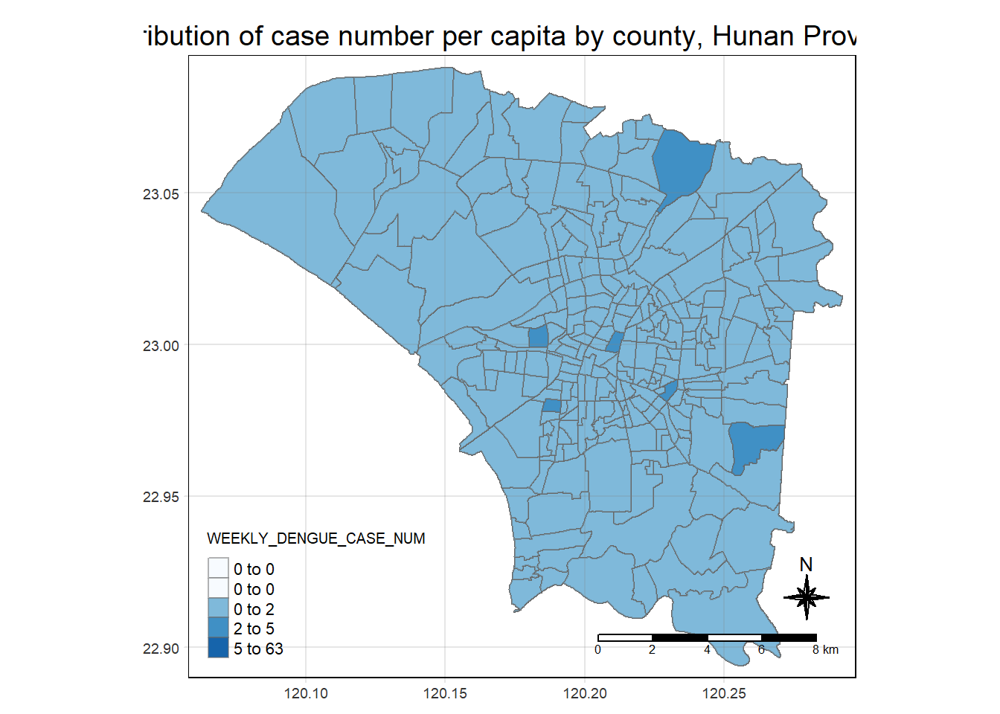

Show the code
pacman::p_load(sf, sfdep, tmap, tidyverse, lubridate)February 25, 2024
From prof:
As a curious geospatial analytics green horn, you are interested to discover:
if the distribution of dengue fever outbreak at Tainan City, Taiwan are independent from space and space and time.
If the outbreak is indeed spatial and spatio-temporal dependent, then, you would like to detect where are the clusters and outliers, and the emerging hot spot/cold spot areas.
The specific tasks of this take-home exercise are as follows:
Using appropriate function of sf and tidyverse, preparing the following geospatial data layer:
a study area layer in sf polygon features. It must be at village level and confined to the D01, D02, D04, D06, D07, D08, D32 and D39 counties of Tainan City, Taiwan.
a dengue fever layer within the study area in sf point features. The dengue fever cases should be confined to epidemiology week 31-50, 2023.
a derived dengue fever layer in spacetime s3 class of sfdep. It should contain, among many other useful information, a data field showing number of dengue fever cases by village and by epidemiology week.
Using the extracted data, perform global spatial autocorrelation analysis.
Using the extracted data, perform local spatial autocorrelation analysis.
Using the extracted data, perform emerging hotspot analysis.
Describe the spatial patterns revealed by the analysis above.
For the purpose of this take-home exercise, two data sets are provided, they are:
TAIWAN_VILLAGE_2020, a geospatial data of village boundary of Taiwan. It is in ESRI shapefile format. The data is in Taiwan Geographic Coordinate System. (Source: Historical map data of the village boundary: TWD97 longitude and latitude)
Dengue_Daily.csv, an aspatial data of reported dengue cases in Taiwan since 1998. (Source: Dengue Daily Confirmed Cases Since 1998. Below are selected fields that are useful for this study:
發病日: Onset date
最小統計區中心點X: x-coordinate
最小統計區中心點Y: y-coordinate
We will be using the following R packages for this exercise:
sf
sfdep
tmap
tidyverse
lubridate
I will be importing the tainan_vil data into my R environment using st_read() of the sf package.
Reading layer `TAINAN_VILLAGE' from data source
`D:\KrisLBT\IS415-GAA\Take_Home_Exercises\Take_Home_Exercise_2\data\geospatial'
using driver `ESRI Shapefile'
Simple feature collection with 649 features and 10 fields
Geometry type: POLYGON
Dimension: XY
Bounding box: xmin: 120.0269 ymin: 22.88751 xmax: 120.6563 ymax: 23.41374
Geodetic CRS: TWD97Now, I will be importing the daily dengue data into my R environment using the read_csv() function of the sf package.
For my own convenience, I decided to translate the columns in dengue from Traditional Chinese to English and also try to link them up the columns in counties_sf. The following code chunk was written to perform it:
For the purposes of our analysis, we are only interested in the following districts:
However, we also face the problem of repeated village names in different towns. To fix this, we can specify the village name with the town name:
We are also only interested in the dengue cases between weeks 31-50 in 2023. We can further restrict it using the following code chunk:
We can use the summary() function to investigate the contents of dengue
發病日 個案研判日 通報日
Min. :2023-07-30 Length:25475 Min. :2023-07-30
1st Qu.:2023-09-11 Class :character 1st Qu.:2023-09-13
Median :2023-10-01 Mode :character Median :2023-10-03
Mean :2023-10-03 Mean :2023-10-05
3rd Qu.:2023-10-25 3rd Qu.:2023-10-27
Max. :2023-12-16 Max. :2023-12-23
性別 年齡層 COUNTYNAME TOWNNAME
Length:25475 Length:25475 Length:25475 Length:25475
Class :character Class :character Class :character Class :character
Mode :character Mode :character Mode :character Mode :character
VILLNAME 最小統計區 X-Coordinate Y-Coordinate
Length:25475 Length:25475 Length:25475 Length:25475
Class :character Class :character Class :character Class :character
Mode :character Mode :character Mode :character Mode :character
一級統計區 二級統計區 感染縣市 感染鄉鎮
Length:25475 Length:25475 Length:25475 Length:25475
Class :character Class :character Class :character Class :character
Mode :character Mode :character Mode :character Mode :character
感染村里 是否境外移入 感染國家 確定病例數
Length:25475 Length:25475 Length:25475 Min. :1
Class :character Class :character Class :character 1st Qu.:1
Mode :character Mode :character Mode :character Median :1
Mean :1
3rd Qu.:1
Max. :1
居住村里代碼 感染村里代碼 血清型 內政部居住縣市代碼
Length:25475 Length:25475 Length:25475 Length:25475
Class :character Class :character Class :character Class :character
Mode :character Mode :character Mode :character Mode :character
內政部居住鄉鎮代碼 內政部感染縣市代碼 內政部感染鄉鎮代碼 epiweek
Length:25475 Length:25475 Length:25475 Min. :31.00
Class :character Class :character Class :character 1st Qu.:37.00
Mode :character Mode :character Mode :character Median :40.00
Mean :39.96
3rd Qu.:43.00
Max. :50.00
epiyear
Min. :2023
1st Qu.:2023
Median :2023
Mean :2023
3rd Qu.:2023
Max. :2023 Looking through the dataframe, I noticed that there are some “None” values in the X- and Y-coordinates. I will remove them using the following:
[1] 0I also wanted to let the VILLNAME in dengue follow the same format as the VILLNAME in tainan.
Finally, I will be converting dengue into an sf object.
Since the dengue cases is for the whole of Tainan Village and not just the districts, we will need to take only the cases that happened within the districts of interest. Morever, we need to retain crucial information such as the epidemiological week that the case occurred in, the village and number of cases per week.
Before that, we can get the total number of cases per week per village in a given town.
However, doing this will drop weeks that have 0 cases. We can fix this using the following code chunk:
# Generate all combinations of VILLNAME and week from 31 to 50
all_combinations <- expand_grid(VILLNAME = unique(dengueCounty$VILLNAME),
epiweek = 31:50)
# Left join with dengue_grp to retain existing records
dengueCountyComplete <- left_join(all_combinations, dengueCounty, by = c("VILLNAME", "epiweek"))
# Replace missing sums with 0
dengueCountyComplete <- mutate(dengueCountyComplete, WEEKLY_DENGUE_CASE_NUM = if_else(is.na(WEEKLY_DENGUE_CASE_NUM), 0, WEEKLY_DENGUE_CASE_NUM))
dengueCountyComplete <- dengueCountyComplete %>%
select(1,2,4)tmap_mode("plot")
tm_shape(tainan_dengue) +
tm_fill("WEEKLY_DENGUE_CASE_NUM",
style = "quantile",
palette = "Blues",
title = "WEEKLY_DENGUE_CASE_NUM") +
tm_layout(main.title = "Distribution of case number per capita by county, Hunan Province",
main.title.position = "center",
main.title.size = 1.2,
legend.height = 0.45,
legend.width = 0.35,
frame = TRUE) +
tm_borders(alpha = 0.5) +
tm_compass(type="8star", size = 2) +
tm_scale_bar() +
tm_grid(alpha =0.2)
I will now try and create the time series cube from dengue_county
Next, is_spacetime_cube() will be used to verify if dengue_county_st is indeed a time series cube.
# Create a dataframe with all combinations of village and week
all_combinations <- expand_grid(VILLNAME = unique(dengue_per_county$VILLNAME),
epiweek = unique(dengue_per_county$epiweek))
# Left join with the dengue_per_county_complete dataframe
dengue_per_county_complete <- all_combinations %>%
left_join(dengue_per_county, by = c("VILLNAME", "epiweek")) %>%
mutate(WEEKLY_DENGUE_CASE_NUM = if_else(is.na(WEEKLY_DENGUE_CASE_NUM), 0, WEEKLY_DENGUE_CASE_NUM)) # Replace missing sums with 0
# Now, you should have a complete dataframe with all combinations of village and week